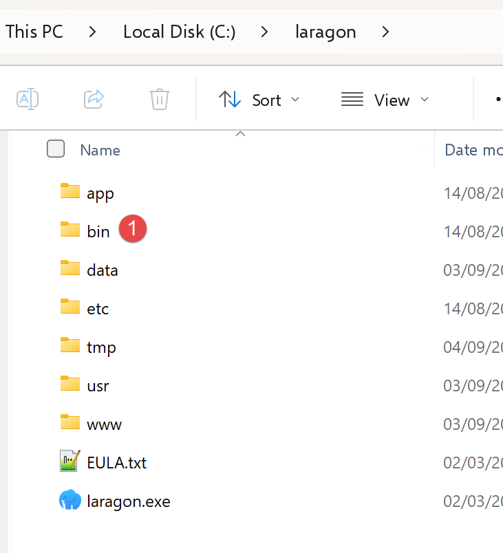
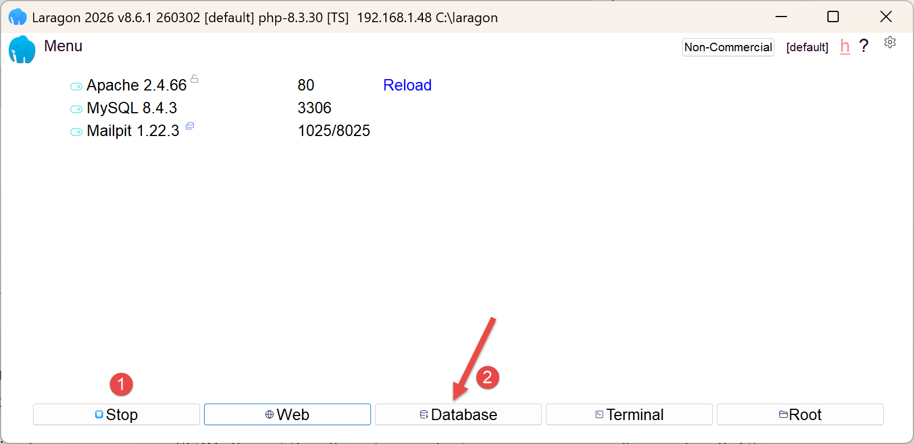
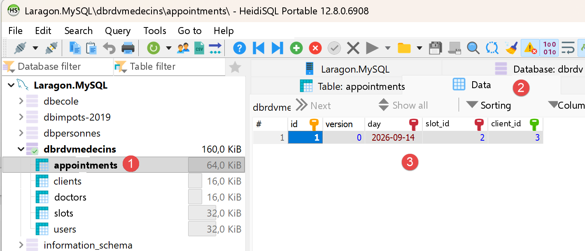
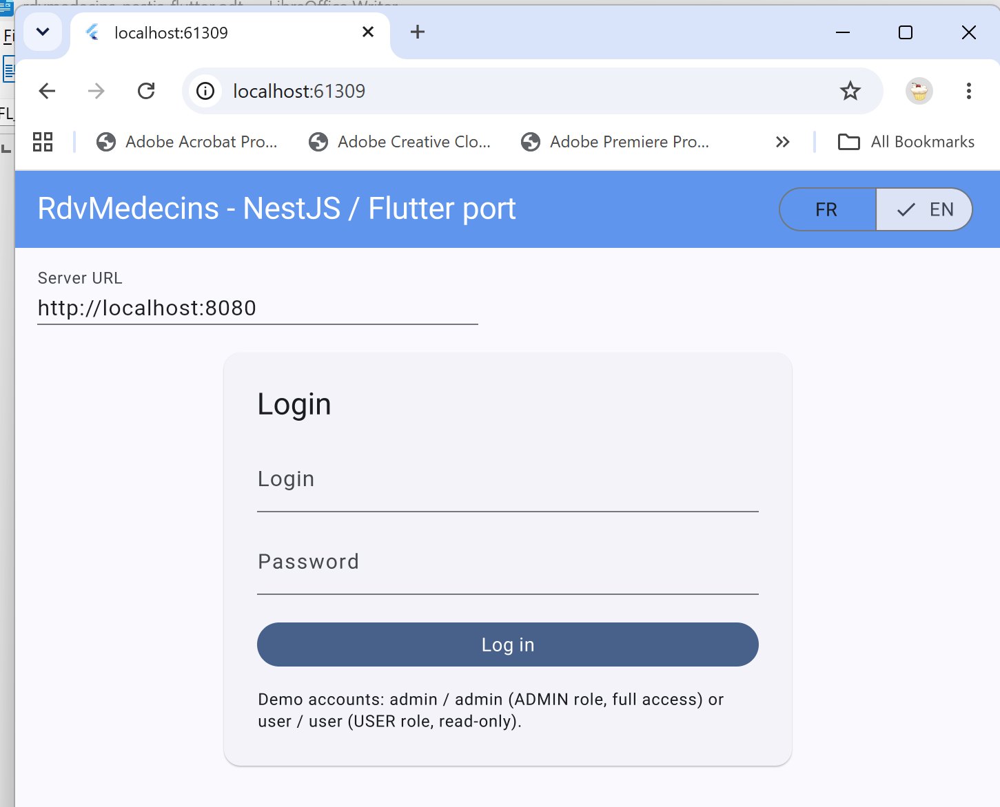

3. Hoofdstuk 2 - De [NestJS]-server installeren
De in dit document beschreven [Flutter]-client heeft een server nodig om te bevragen: de [NestJS]-server voor de applicatie [RdvMedecins], die bij dit document is meegeleverd in de map [rdvmedecins-nestjs-server]. Omdat dit document zich richt op [Flutter], wordt die server behandeld als een „blackbox”: dit hoofdstuk legt uit hoe u de server installeert, configureert, de bijbehorende [MySQL]-database aanmaakt, de server start en test, maar de code ervan wordt niet onderzocht. Lezers die [NestJS] willen leren, kunnen het document *Inleiding tot de taal TypeScript en het framework NestJS* (2026) raadplegen.
Dit hoofdstuk is in wezen een herdruk van het hoofdstuk „Een NestJS-server installeren” uit het document *Inleiding tot de taal Dart aan de hand van voorbeelden* (2026), aangepast voor een andere server: de server voor de belastingberekening uit dat document wordt hier vervangen door de server [RdvMedecins] en de bijbehorende database [dbimpots-2019] door de database [dbrdvmedecins].
3.1. Laragon installeren
Om de [MySQL]-database aan te maken die door de [NestJS]-server wordt gebruikt, gebruiken we de tool Laragon. In september 2026 is Laragon beschikbaar op de URL [Download Laragon – Fast & Modern Dev Environment ]. Laragon bevat tools waarmee u een PHP-server en het DBMS [MySQL] kunt installeren:

- in [1] een Apache-webserver;
- in [2] het DBMS [MySQL];
- in [3] een berichtentool die we niet gebruiken;
- [4] start alle services (Apache, [MySQL], MailPit);
- [5] toont de webpagina van de URL [http://localhost]. Standaard verwijst deze URL naar de map <laragon-install>\www, waarbij <laragon-install> de installatiemap van Laragon is;
- in [6] start de tool HeidiSQL, waarmee u MySQL-databases kunt beheren. We gebruiken deze tool om de database aan te maken die door de server [RdvMedecins] wordt gebruikt;
- In [7] opent u een terminal waarin alle binaire bestanden die Laragon nodig heeft, in PATH staan;
- In [8] opent u Windows Verkenner in de map die bij de URL [http://localhost] hoort;
De installatiemap van Laragon bevat de volgende items:
 |
- In [1] bevat de map [bin] talrijke applicaties:
 |
- In [1] de Apache-webserver;
- in [2] een opdrachtregelterminal;
- in [3] een [git]-client voor het versiebeheer van de verschillende versies van een project;
- in [4] een databasebeheerder;
- in [5] een mailbeheerder;
- in [6] het DBMS [MySQL];
- [7], een andere webserver;
- in [8] [node.js] om JavaScript-scripts uit te voeren;
- [9], een teksteditor;
- [10], de PHP-interpreter;
- [11], de [Python]-interpreter;
- [12], een cacheserver;
Laragon wordt geleverd met een uitgebreide ontwikkelomgeving. In deze cursus gebruiken we alleen het DBMS [MySQL] [6] en de tool [heidisql] om het grafisch te beheren;
3.2. De [NestJS]-server installeren en configureren
De map [rdvmedecins-nestjs-server] heeft de volgende mappenstructuur:
Elke submap van [src/] bevat een eigen [README.md]-bestand, dat het doel van de bestanden in die map samenvat. De broncode van deze bestanden wordt in dit document niet behandeld.
Typ in de map [rdvmedecins-nestjs-server] de volgende opdrachten in een terminal:
Het bestand [.env] stelt omgevingsvariabelen in:
Pas het zojuist aangemaakte bestand [.env] aan uw [MySQL]-installatie aan (gebruikersnaam, wachtwoord, poort). Omdat authenticatie is toegevoegd, bevat dit bestand ook een sleutel met de naam JWT_SECRET: de voorbeeldwaarde is geschikt om dit document te volgen, maar moet vóór enig daadwerkelijk gebruik worden vervangen door een willekeurige tekenreeks die uniek is voor u.
3.3. De database aanmaken
De database [dbrdvmedecins] weerspiegelt de structuur van het oorspronkelijke document (2014, Spring 4 / [MySQL] 5): dezelfde tabellen ([doctors], [clients], [slots], [appointments], nu met Engelse namen), dezelfde refererende sleutels en dezelfde uniciteitsconstraint. De enige nieuwe toevoeging, ingevoerd in de stap „authenticatie” van deze port, is de tabel [users]. De relaties tussen deze tabellen zijn als volgt: een arts ([doctors]) heeft meerdere tijdvakken ([slots], refererende sleutel [doctor_id]); een afspraak ([appointments]) koppelt een dag, een tijdvak (en dus een arts) en een cliënt ([clients]); de tabel [users] is onafhankelijk van de andere vier: ze wordt uitsluitend voor authenticatie gebruikt.
3.3.1. [database/dbrdvmedecins.sql]

Laten we deze code toelichten:
- Regels 19-23: [DROP TABLE IF EXISTS …] : het script begint bij elke uitvoering met een lege database, in omgekeerde volgorde van de afhankelijkheden (te beginnen met `appointments`, dat verwijst naar `[slots]` en `clients`, tot en met `users`, waar niemand naar verwijst): [MySQL] weigert een tabel te verwijderen waarnaar nog door een refererende sleutel wordt verwezen;
- regel 47: [doctor_id INT NOT NULL], vervolgens regel 52: [CONSTRAINT fk_slots_doctor FOREIGN KEY …] : een tijdvak hoort altijd bij een arts;
- regel 63: [CONSTRAINT unq1_appointments UNIQUE (day, slot_id)] : de centrale bedrijfsregel van de applicatie: hetzelfde tijdvak op dezelfde dag kan slechts één keer worden geboekt. Deze constraint, en alleen deze constraint, voorkomt een dubbele afspraak; noch de controller, noch de bedrijfslaag controleert dit expliciet opnieuw;
- regels 66-73: [CREATE TABLE users (…)] : de tabel die door deze stap is toegevoegd. `login` is UNIQUE (twee gebruikers kunnen niet dezelfde inlognaam delen); `password` bevat een wachtwoord dat met bcrypt is gehasht (nooit in platte tekst); role is 'ADMIN' of 'USER': een eenvoudige tekstkolom, terwijl het oorspronkelijke document drie tabellen gebruikte (users, roles, users_roles) om meerdere rollen per gebruiker mogelijk te maken. Omdat deze applicatie slechts twee elkaar uitsluitende rollen nodig heeft, zou de oorspronkelijke veel-op-veel-relatie overdreven zijn geweest;
- regels 90-92: [INSERT INTO users …] : twee demoaccounts, admin/admin (rol ADMIN) en user/user (rol USER), met hun wachtwoorden al gehasht met bcrypt (10 salt-rondes); nooit in platte tekst, ook niet in dit demoscript.
3.3.2. Het script uitvoeren met HeidiSQL
Om de [MySQL]-database aan te maken die de [NestJS]-server nodig heeft, gaan we als volgt te werk:
 |
- In [1] moeten alle services zijn gestart;
- in [2] kunt u met de optie [Database] de database beheren;
De optie [Database] start een hulpprogramma met de naam HeidiSQL:
 |
- In [1] kunt u uit verschillende DBMS-opties kiezen. De standaardwaarde is MySQL. Dat is prima;
- in [2] meldt u zich aan bij HeidiSQL;
 |  |
- Voer in [1-2] het SQL-bestand uit en selecteer vervolgens het bestand [dbrdvmedecins.sql], dat u vindt in de map [rdvmedecins-nestjs-server/database]:

Als u het bestand [3] uitvoert, wordt de database [dbrdvmedecins] aangemaakt die door de [NestJS]-server wordt gebruikt. Om die te bekijken, drukt u in HeidiSQL op F5 om het scherm te vernieuwen:

De database [dbrdvmedecins] is aangemaakt. U kunt de inhoud bekijken:

- In [1-3] de tabel [clients];
- [id] is de primaire sleutel van de tabel;
- [version] is het versienummer van de rij. Dit nummer wordt verhoogd telkens wanneer de rij wordt gewijzigd;
- [title, last_name, first_name] identificeert de persoon;

- in [1-3] de tabel [doctors];
- [id] is de primaire sleutel van de tabel;
- [version] is het versienummer van de rij;
- [title, last_name, first_name] identificeert de persoon;

- In [1-3] de tabel met de afspraaktijdvakken van de artsen:
- [id]: primaire sleutel;
- [version]: versienummer van de rij;
- [doctor_id]: refererende sleutel naar de primaire sleutel van de arts;
- [start_hour, start_minute]: uur en minuten van de begintijd van de afspraak. Zo betekent [8,20] 8:20 uur 's ochtends.
- [end_hour, end_minute]: uur en minuten van het einde van het consult.

- In [1-3] de tabel [appointments] met de geplande afspraken;
- [id]: primaire sleutel;
- [version]: versienummer;
- [day]: datum van de afspraak;
- [slot_id]: refererende sleutel naar de primaire sleutel van het afspraaktijdvak. Omdat een tijdvak aan een arts is gekoppeld, weten we welke arts deze afspraak afhandelt;
- [client_id]: refererende sleutel naar het nummer (primaire sleutel) van de patiënt die op de afspraak komt;

- in [1-3] de tabel [users], die de gebruikers vermeldt die de applicatie [NestJS] mogen gebruiken;
- [id, version]: primaire sleutel, versienummer;
- [login, password]: inloggegevens van de gebruiker;
- [name]: naam van de gebruiker;
- [role]: de rol van de gebruiker. [ADMIN] heeft alle toegangsrechten. [USER] heeft alleen-lezentoegang. Deze gebruiker kan de agenda van een arts bekijken maar geen afspraak plannen of annuleren;
3.4. De [NestJS]-server starten
Start alle Laragon-services ([Start All]) als u dat nog niet hebt gedaan. Start vervolgens de NestJS-server in een VSCode-terminal voor het NestJS-project:
De console toont achtereenvolgens: het opstarten van de [NestJS]-module, de lijst met routes die door de controllers beschikbaar worden gesteld en ten slotte de bevestiging van het opstarten:
Deze console-uitvoer bevestigt dat de server inderdaad op poort 8080 luistert, precies dezelfde poort als de Spring Boot-server in het oorspronkelijke document, die om deze reden bewust is gekozen.
Deze routes vormen de JSON-API die de client [Flutter] in Hoofdstuk 4 gebruikt. [POST /login] is de enige openbare route: ze retourneert een JWT-token dat alle andere routes vereisen in de header [Authorization: Bearer <token>]. De routes waarmee alleen gegevens worden gelezen ([GET …]) zijn toegankelijk voor de rollen ADMIN en USER; de twee routes die gegevens wijzigen, [POST /addAppointment] en [POST /deleteAppointment], zijn voorbehouden aan de rol ADMIN. Zakelijke antwoorden worden verpakt in een object [{ status, data }], waarin [status] bij succes op 0 staat.
3.5. De server testen met een browser
Sinds de toevoeging van authenticatie vereisen alle routes van [RdvMedecinsController] een geldig JWT-token; een browser alleen kan daarom niet meer worden gebruikt om ze rechtstreeks te testen. Bijvoorbeeld:
retourneert nu zonder token een fout 401 Unauthorized:

Dit is het verwachte gedrag: dit antwoord bevestigt dat de server zijn routes naar behoren beschermt. Postman (volgende paragraaf) is nodig om een token op te halen en vervolgens te gebruiken.
3.6. De [NestJS]-server testen met Postman
De tool Postman is beschikbaar op de URL [https://www.postman.com/downloads/]. Mogelijk moet u een account aanmaken.
Start alle Laragon-services en open vervolgens de desktopapplicatie Postman:
 |  |
- Maak in [1-2] een HTTP-verzoek aan om de server voor het beheer van de artsenafspraken te bevragen;
3.6.1. Inloggen en een token ophalen
- Maak een nieuw Postman-verzoek aan met de methode POST en de URL http://localhost:8080/login;
- Selecteer op het tabblad [Body] de optie „raw”, vervolgens het formaat JSON en voer in: {"login": "admin", "password": "admin"} (of „user/user” om de rol USER te testen);
- Verstuur het verzoek.

- in [1-2] het POST-verzoek aan de server [NestJS] die op poort 8080 draait;
- in [3-5] de body van het verzoek. Hiermee wordt de JSON-tekenreeks naar de server gestuurd die de inloggegevens bevat van de gebruiker die wil inloggen, in dit geval admin/admin;
- in [6] het antwoord van de server;
- in [7] het authenticatietoken dat latere verzoeken naar de server moeten sturen om aan te geven: „ik ben al geauthenticeerd”;
Kopieer de waarde van accessToken: dit is het token dat u nu in elk volgend verzoek moet opnemen. In het bovenstaande voorbeeld is het te kopiëren token „eyJ...zoM” (zonder de aanhalingstekens).
3.6.2. Een beveiligde route aanroepen met het token
Selecteer voor GET /getAllDoctors (of een andere route van RdvMedecinsController) in Postman op het tabblad Authorization het type Bearer Token en plak het hierboven gekopieerde token (Postman voegt dan automatisch de header Authorization: Bearer <token> toe).

- in [1-2] het naar de server verzonden verzoek. Het vraagt de lijst met artsen in de database op;
- In [3-5] moet het verzoek het authenticatietoken bevatten. Selecteer in [4] [Bearer Token], en plak in [5] het authenticatietoken dat u eerder hebt gekopieerd;
- in [7] het antwoord van de server;
3.6.3. De POST-routes testen (/addAppointment, /deleteAppointment)
Volg dezelfde procedure als hierboven (methode POST, body JSON, Bearer Token), precies zoals in het oorspronkelijke document de Chrome-extensie „Advanced Rest [Client]” voor dezelfde routes werd gebruikt.
Opmerking: de volgende Postman-verzoeken vindt u in de collectie [rdvmedecins-nestJS.postman_collection.json]:

Druk in Postman op Ctrl-0 om de collectie te laden:

- Klik op [1] om de collectie te laden en selecteer het collectiebestand. Zodra de collectie is geladen, worden de bijbehorende verzoeken weergegeven:

Om /addAppointment te testen met het token van een ADMIN-account:
- Postman-verzoek, methode POST, URL http://localhost:8080/addAppointment;
- Tabblad Authorization: Bearer Token, token van admin;
- Tabblad [Body], raw, JSON: {"day": "2026-09-13", "clientId": 1, "slotId": 5};
- Verstuur het verzoek.

- in [3-5] de body van het verzoek;

U kunt met HeidiSQL controleren dat er een afspraak aan de database is toegevoegd:

Om /deleteAppointment te testen, volgt u dezelfde procedure met de body {"appointmentId": 2} (de id van de afspraak die moet worden geannuleerd (8) hierboven).

- in [4] het nummer hierboven, de afspraak die moet worden verwijderd;

- in [5-7] het authenticatietoken;
- in [9] het antwoord van de server. [status=0] geeft aan dat de bewerking is geslaagd. U kunt dit controleren met HeidiSQL:

- in [3] bestaat afspraak nr. 2 niet meer;
Probeer dit: herhaal hetzelfde verzoek /addAppointment met het token van het account USER (user/user) in plaats van het token van admin: het antwoord wordt 403 Forbidden, met de melding „role [USER] does not allow this action (required role: ADMIN)”, een concrete demonstratie van de rolgebaseerde toegangscontrole die door de server wordt toegepast.
3.7. De Flutter-client voor het eerst starten
Voer in de map [rdvmedecins_flutter_client] (de [NestJS]-server moet eerst zijn gestart) het volgende uit:

Eerst verschijnt het inlogscherm, net als bij de eerdere clients in deze cursus (zie Hoofdstuk 4): bij de database van de server worden twee demoaccounts geleverd, [admin]/[admin] (rol [ADMIN], volledige toegang) en [user]/[user] (rol [USER], alleen-lezentoegang). Twee knoppen met het label „FR” en „EN” rechtsboven maken het mogelijk de interface naar het Frans om te schakelen, zelfs vóór het inloggen. Hoofdstuk 5 beschrijft de equivalente opdrachten voor desktop en mobiel, evenals de enige instelling die specifiek is voor die platformen (het serveradres; zie verderop in dit hoofdstuk).